Les années en Suisse - Jusqu'à 1870
Recensement de Riddes de 1870
Francisco, ainsi que ses frères José et Etienne, apparaissent au recensement de 1870, enregistrés comme résidents de Riddes (spécifiquement dans le hameau de Villy), avec ses parents François Clemenzoz et Marie Stalder.

À partir de ce recensement, on peut extraire quelques dates importantes :
- François Clemenzoz : 9 avril 1809
- Marie Stalder : 15 juin 1828
- José Clemenzo : 5 mai 1856
- Francisco Clemenzo : 31 mai 1858
- Etienne Clemenzo : 25 février 1862
En outre, Joséphine Clemenzo, née le 19 mars 1843, figure comme mère célibataire. Elle a eu les filles suivantes :
- Anaïs Clemenzo
- Edwige Clemenzo
Les communes d'origine sont :
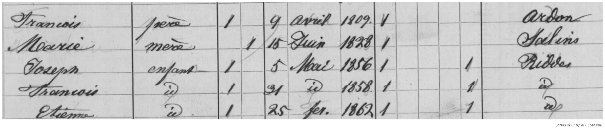
Villy, Riddes
La partie supérieure de la feuille du recensement nous donne la localisation de la famille :

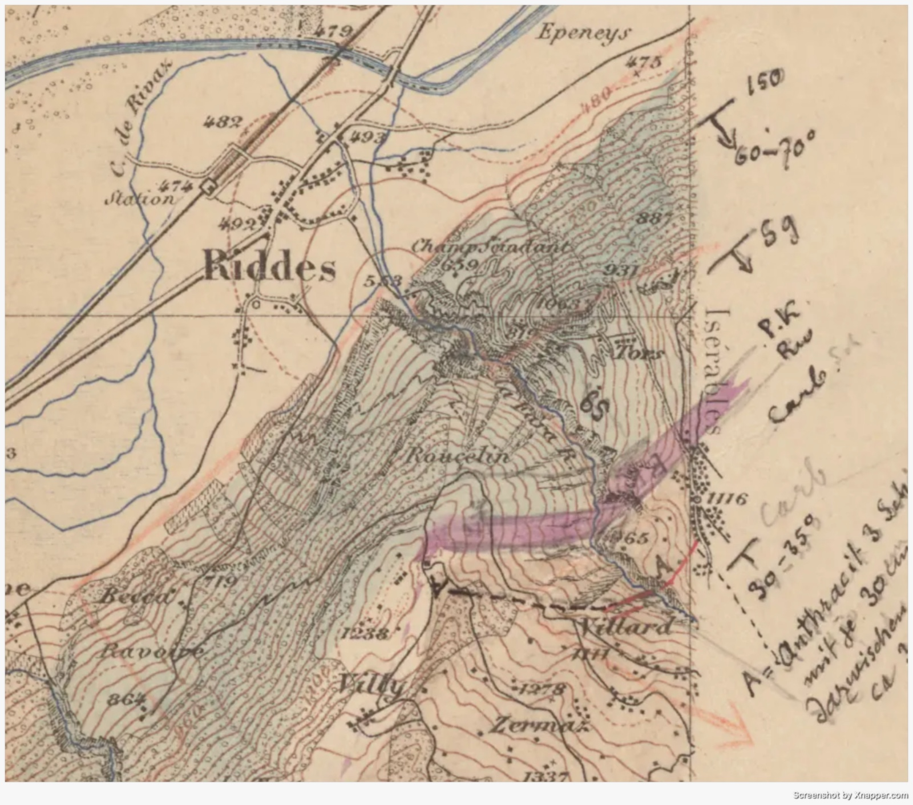
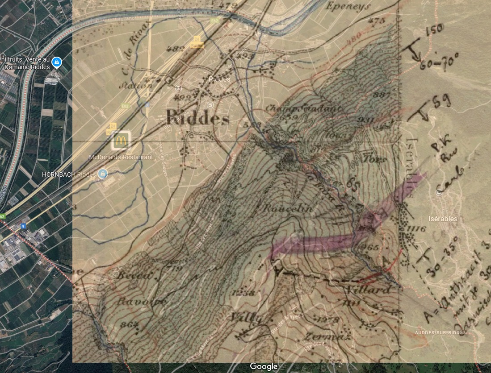
Documents en Argentine. Il existe divers recensements, actes et registres avec sa signature, disponibles ici. Parmi eux, je mets en avant le suivant :
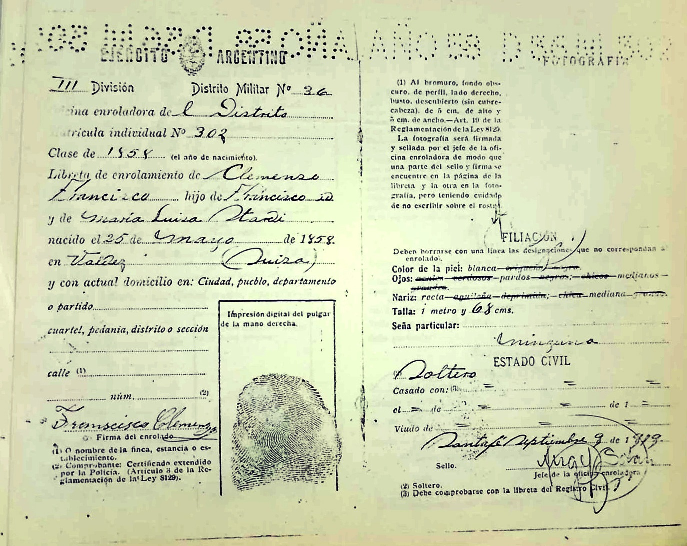
Dans ce document, on vérifie les noms des parents : François Clemenzoz et Maria Luisa Stalder (dans certaines sources apparaît comme Stardi). Le document est daté de 1919 et Francisco y figure comme célibataire.
Années en Argentine
Entre Ríos
1873
Selon le livre Valaisans émigrés au XIXe siècle de Maurice Carron
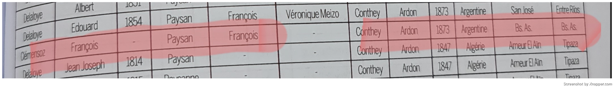
D'autre part, dans La Colonie San José et l'Immigration Européenne de Celia A. Vernaz apparaît un Clemenzoz arrivé depuis Riddes, Valais, qui est exactement l'origine de la famille Clemenzoz. Cependant, l'année n'est pas enregistrée.
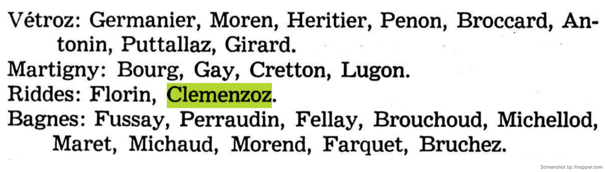
Pourrait-il s'agir de la même personne ? Peut-être que Francisco est né à Conthey et a vécu à Riddes, ou vice-versa.
Selon Google Maps, Ardon est situé à seulement une heure de Riddes, il ne serait donc pas étrange que dans différents documents l'un ou l'autre endroit soit mentionné :
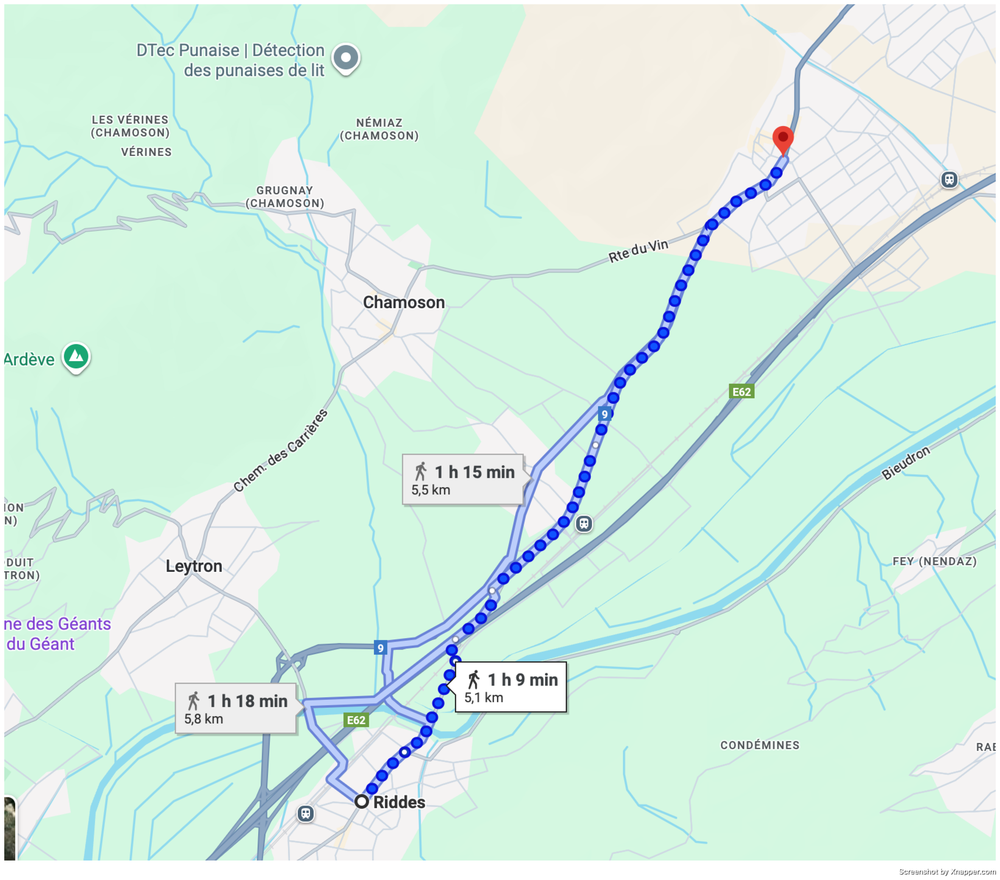
1892
La première preuve documentaire avec la signature de Francisco en Argentine correspond à l'acte de naissance de son fils León Francisco, né en 1891 :
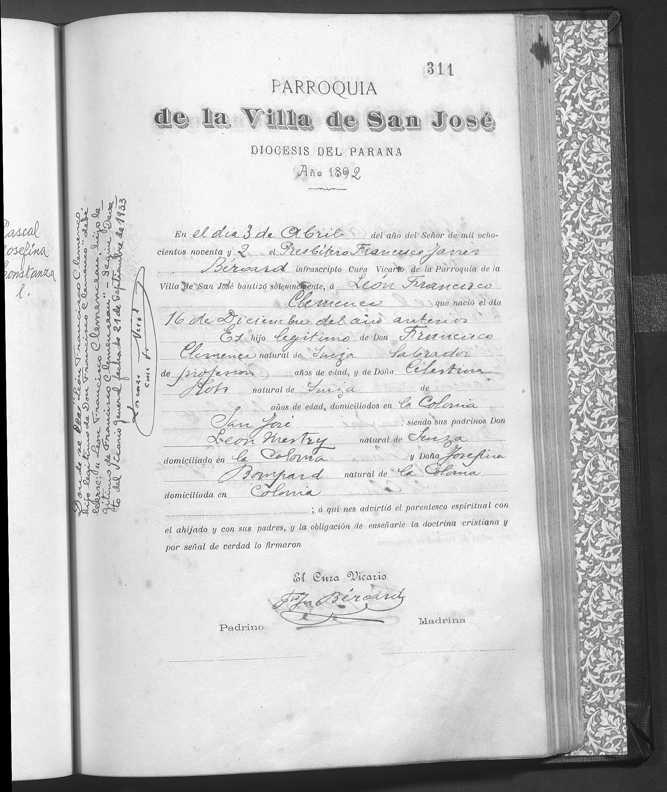
Ceci nous laisse quelques questions :
- En 1891, Francisco avait déjà connu Celestina Roh.
- Il était domicilié à la Colonie San José, Entre Ríos.
- Il existe un laps de 19 ans sans registres de Francisco.
À partir de là surgissent plusieurs questions :
- Francisco et Celestina se sont-ils rencontrés à Santa Fe et ont-ils voyagé ensemble à Entre Ríos ?
- Francisco était-il déjà à Entre Ríos et a-t-il connu Celestina quand elle a déménagé avec sa famille de Santa Fe ?
- Se connaissaient-ils auparavant en Suisse et sont-ils arrivés ensemble à Santa Fe ?
- Étant donné que Celestina est venue avec sa famille, est-il possible que Francisco l'ait aussi fait ?
- Pourrait-ce être le père de Francisco qui apparaît dans les livres de la Colonie ?
- Pourquoi n'existe-t-il pas de registres clairs de la famille complète ?
Quant à la famille de Francisco, il existe une lettre de 1905 du tribunal de Conthey, concernant un héritage, où est mentionné Etienne, un frère de Francisco :
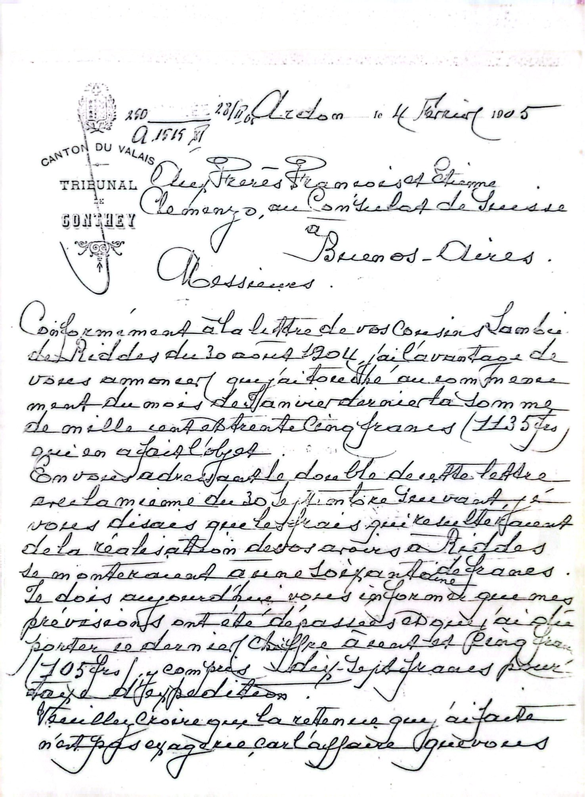
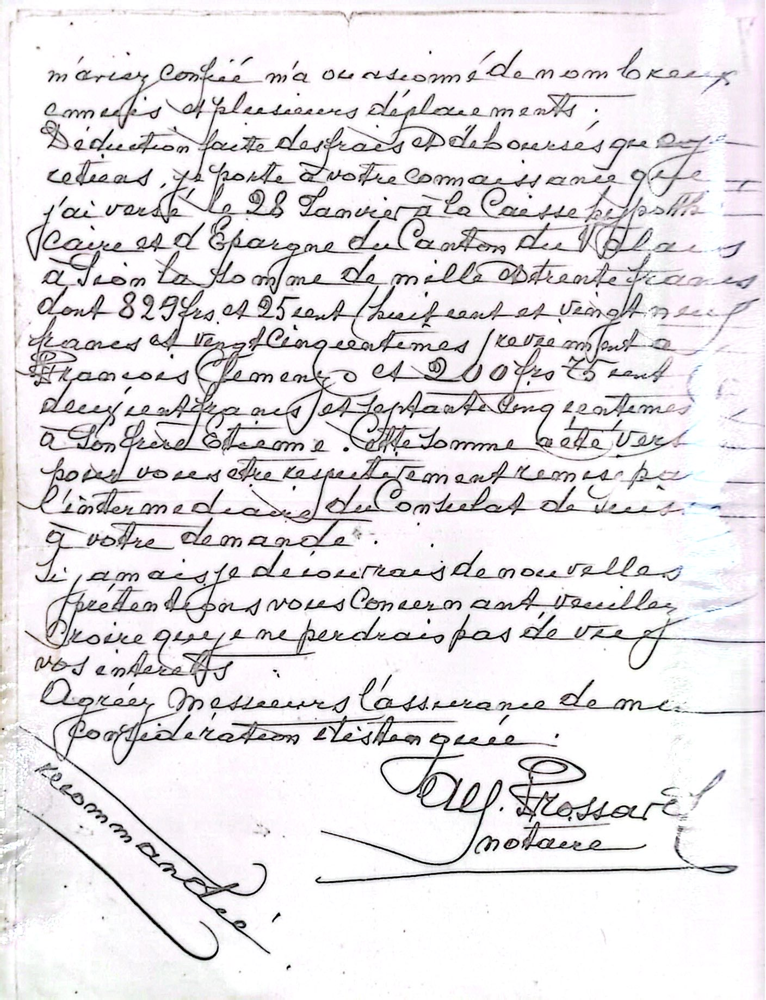
Ceci a mené à l'hypothèse qu'Etienne Clemenzo pourrait être Esteban Clemenzoz, qui a plusieurs registres sur FamilySearch. Parmi eux, on retrouve ce qui suit :
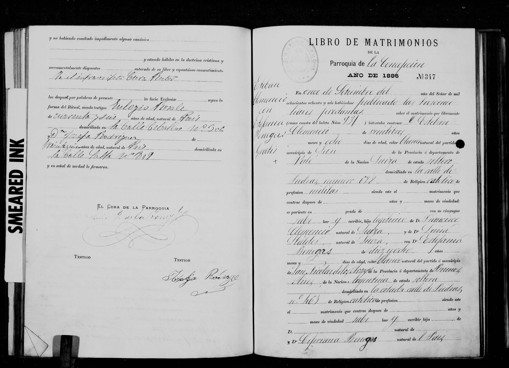
Ceci confirme que Esteban Clemenzoz et Francisco Clemenzo étaient frères, tous deux fils de François Clemenzoz et Marie Luisa Stalder.
Revenant aux enfants de Francisco à Entre Ríos, nous avons :
- Celestina Clemenzo (probable fille de Celestina, antérieure à sa rencontre avec Francisco)
- León Francisco Clemenzo (1891)
- Francisca Clemenzo (inconnue)
- Pedro Clemenzo (inconnue)
- Félix Clemenzo (1894)
- María Luisa Clemenzo (1897)
- Carlota Julia Clemenzo (1899)
Francisca Clemenzo et Pedro Clemenzo figurent au recensement de Colón de 1895, parmi les cinq enfants que Francisco et Celestina déclaraient avoir jusqu'à ce moment :
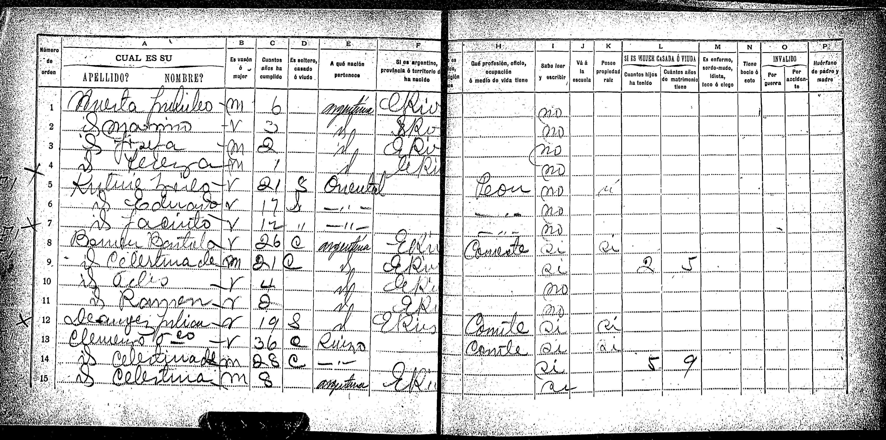
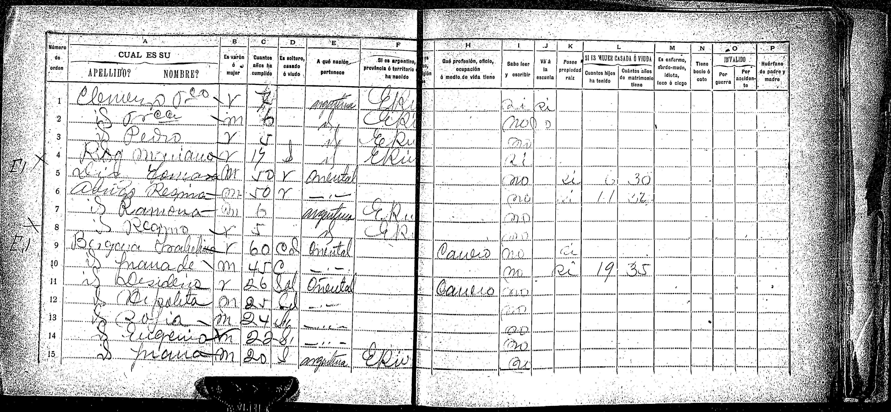
Dans ce document apparaît un fils nommé Francisco, que j'interprète comme León Francisco Clemenzo.
Le cinquième enfant n'est pas listé, mais j'estime qu'il s'agit de Félix Clemenzo, né en 1894.
En conclusion, selon les documents trouvés, Francisco s'est établi à Entre Ríos au moins en 1892 et y a résidé jusqu'au moins 1899, année de la naissance de sa dernière fille, Carlota.
Santa Fe
1919
La référence documentaire suivante correspond au registre militaire de 1919, qui situe Francisco à Santa Fe :
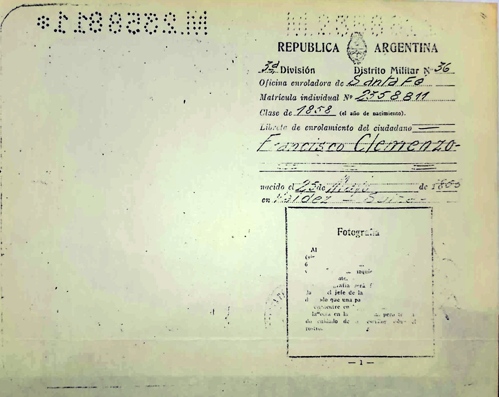
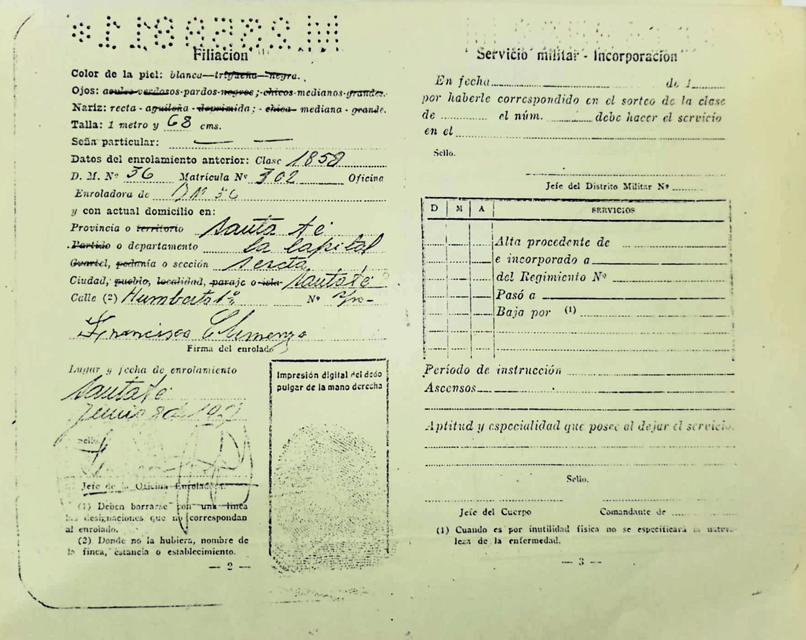
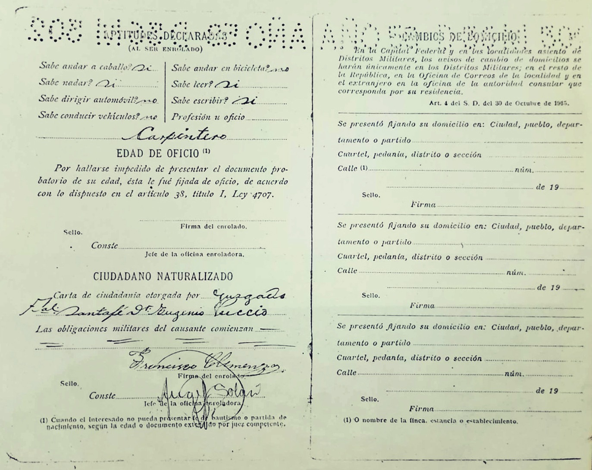
Retour à Entre Ríos
1928
Enfin, l'acte de décès de Francisco en 1928 confirme qu'il était à Concepción del Uruguay, Entre Ríos.
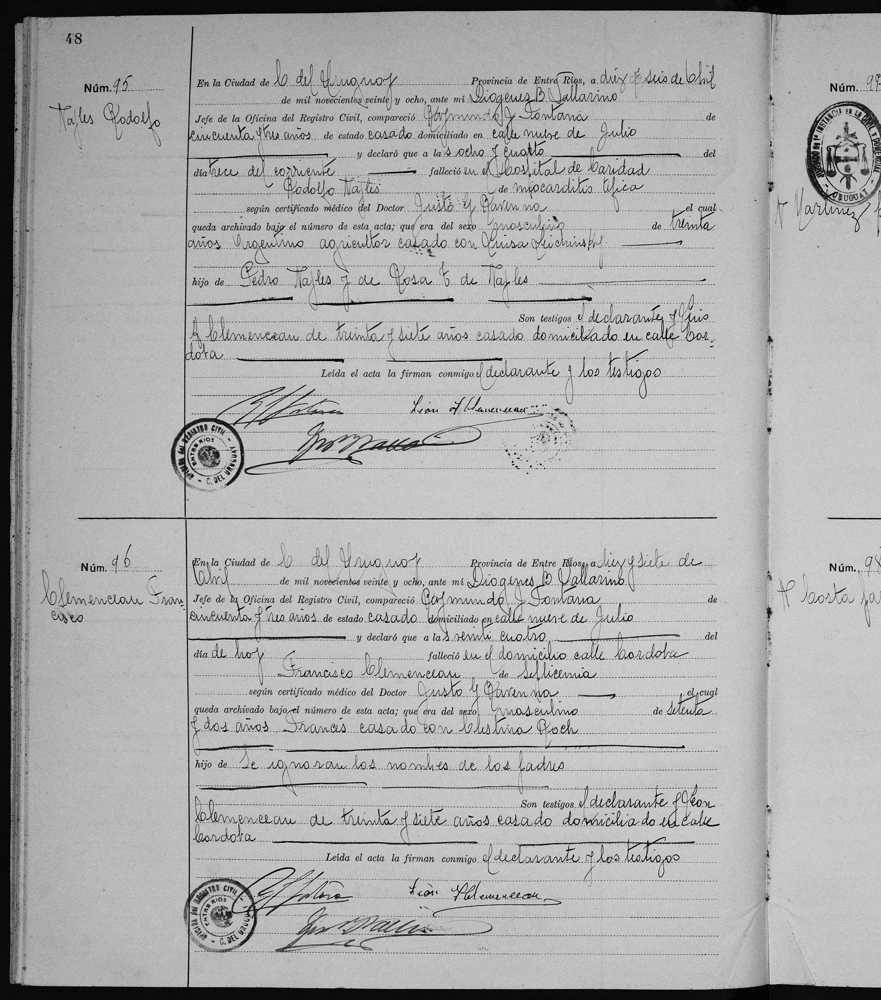
Tous les documents peuvent être consultés en détail en cliquant ici.
Observations
- Entre son arrivée (1873) et le premier registre à Entre Ríos (1891), il y a près de deux décennies sans traces claires.
- Il n'est pas totalement défini s'il est parti de Conthey, Ardon ou Riddes, car les sources mentionnent des endroits différents, bien que proches.
- Les enfants apparaissent de manière fragmentée dans différents recensements et actes, ce qui ouvre la possibilité qu'il existe encore des registres non localisés.
Merci
Il y a quelques années, je ne connaissais que le nom de mon grand-père ; aujourd'hui je peux remonter jusqu'à mon arrière-arrière-grand-père. Tout a aidé : les conversations, les voyages avec mon père et toutes ces personnes qui ont dû m'écouter parler de généalogie, de registres et de documents.
Sans la collaboration de Gustavo Clemenzo, je n'aurais pas pu confirmer beaucoup de choses que je sais maintenant avec certitude ; il m'a partagé des documents clés.
Un remerciement très spécial à Jean-Yves, pour sa grande amabilité d'avoir consacré son temps à chercher un registre pour moi à Sion, simplement dans l'intention de m'aider.
Les conversations avec Lucía Magallanes ont aussi été très précieuses, car elle m'a fait remarquer des détails que j'avais négligés.
Et à Hernán, qui m'a aidé à l'édition de beaucoup d'images.